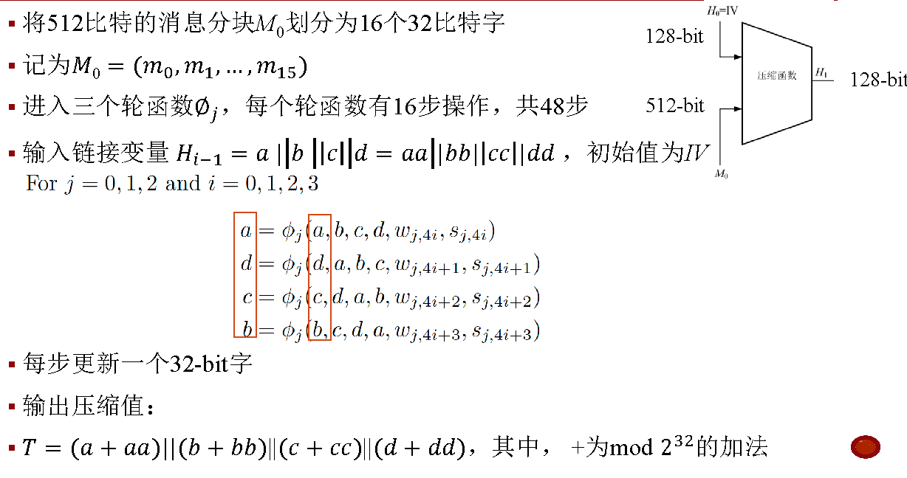
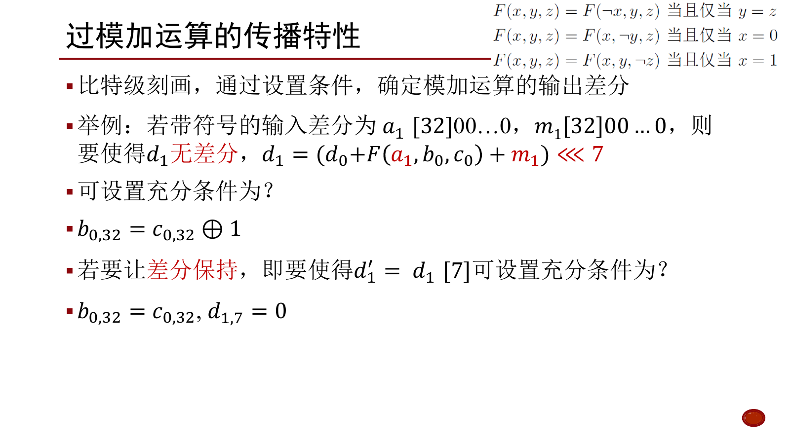
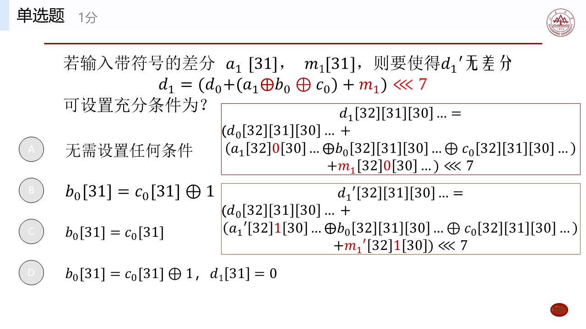
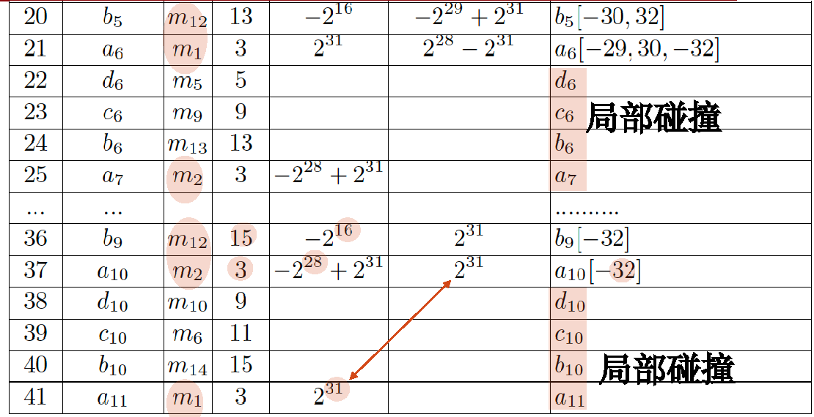
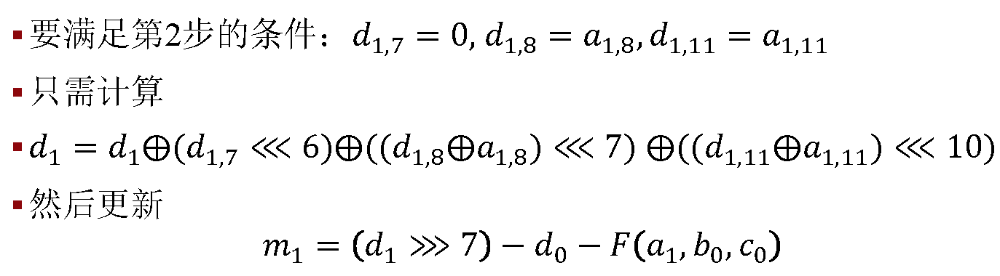

具体杂凑函数的碰撞攻击¶
来源：
密码分析学 / notes/07-杂凑函数/具体杂凑函数的碰撞攻击.md
1. 利用结构寻找碰撞¶
生日攻击把杂凑函数视为随机映射，寻找任意碰撞需要约 \(2^{n/2}\) 次计算。针对具体算法时，还可以研究压缩函数的布尔运算、模加、循环移位与消息调度，主动构造一对差分沿预定路线传播的消息，使最终输出相同。课件以 MD4 为例，介绍比特追踪、充分条件与消息修改。
2. MD4 结构和碰撞目标¶
MD4 填充消息并附加长度，再以 512 比特为一块迭代压缩；链接状态为 128 比特，拆成四个 32 比特字 \((a,b,c,d)\)。每块消息拆为 \(m_0,\ldots,m_{15}\)，压缩函数有三轮、每轮 16 步，共 48 步。每步用一个消息字、布尔函数、模 \(2^{32}\) 加法和循环移位更新一个状态字。RFC 1320 给出了完整算法。

图源：第 12.3.2 节，第 3 页。
链接变量是什么？¶
链接变量也叫链值，是消息块之间传递的中间状态。它记录前面各块的处理结果，并作为下一块压缩函数的输入。将填充后的消息分为 \(M_1,\ldots,M_t\)，记压缩函数为 \(f\)：
这里 \(IV\) 是固定初始值，\(H_i\) 是处理完第 \(i\) 块后的 128 比特链值。每处理一块，就将输出链值交给下一块；处理完最后一块后，\(H_t\) 的四个字按 MD4 规定的字节序输出为摘要。
aa、bb、cc、dd 是什么？¶
MD4 的链值由四个 32 比特字组成。处理当前消息块时，先把输入链值赋给工作变量 \((a,b,c,d)\)，并分别保存一份：
随后用当前消息块更新 \((a,b,c,d)\)，共做 48 步；备份 \((aa,bb,cc,dd)\) 保持不变。48 步结束后，将更新后的工作变量与各自的备份逐字相加，得到输出链值。这一步叫前馈：
其中每个加法都按 \(2^{32}\) 取模。\(aa\) 是这一块开始时 \(a\) 的旧值，公式中的 \(a\) 是经过 48 步更新后的值；其他三组同理。
小例子： 如果开始时 \(a=5\)，先保存 \(aa=5\)；假设 48 步之后 \(a=12\)，则输出链值的第一个字为 \(12+5=17\)。四个字合在一起，就成为下一块的输入链值。
与碰撞攻击的关系： 若两个不同消息块从同一个链接值开始，它们的备份 \((aa,bb,cc,dd)\) 相同。因此，只要两条计算在 48 步后得到相同的 \((a,b,c,d)\)，前馈相加后的输出链值也相同。对同长度的两条消息，若它们在同一位置产生相同链接值、之后的块及填充相同，最终杂凑值也相同。
MD4 输出为 128 比特，随机映射的生日攻击基准约为 \(2^{64}\) 次求值。下面构造差分路线的目的，是利用 MD4 的结构降低找碰撞的工作量。
三轮函数和一步运算¶
MD4 的三个布尔函数逐位作用于 32 位字：
\(F\) 是选择函数：该位 \(X=1\) 时输出 \(Y\)，\(X=0\) 时输出 \(Z\)；\(G\) 输出三个输入中占多数的比特；\(H\) 输出三个输入的异或。第一、二、三轮分别使用 \(F,G,H\)。每一步只更新一个状态字，其他三个状态字参与计算；随后轮流更新 \(a,d,c,b\)。
课件中的 \(w\) 和 \(s\)¶
把当前的 512 比特消息块按 MD4 的小端字节序拆成 16 个 32 比特消息字 \(m_0,\ldots,m_{15}\)。课件以 \(j=0,1,2\) 编号三轮，每轮的步骤以 \(t=0,\ldots,15\) 编号：
- \(w_{j,t}\) 是第 \(j\) 轮第 \(t\) 步选用的消息字，它直接取自 \(m_0,\ldots,m_{15}\)。
- \(s_{j,t}\) 是该步循环左移的位数。它由算法固定，按轮次和步数查表。
每轮都将 16 个消息字各使用一次，三轮的顺序分别是：
| 步数 \(t\) | 第 0 轮 \(w_{0,t}\) | 第 1 轮 \(w_{1,t}\) | 第 2 轮 \(w_{2,t}\) |
|---|---|---|---|
| 0 | \(m_0\) | \(m_0\) | \(m_0\) |
| 1 | \(m_1\) | \(m_4\) | \(m_8\) |
| 2 | \(m_2\) | \(m_8\) | \(m_4\) |
| 3 | \(m_3\) | \(m_{12}\) | \(m_{12}\) |
| 4 | \(m_4\) | \(m_1\) | \(m_2\) |
| 5 | \(m_5\) | \(m_5\) | \(m_{10}\) |
| 6 | \(m_6\) | \(m_9\) | \(m_6\) |
| 7 | \(m_7\) | \(m_{13}\) | \(m_{14}\) |
| 8 | \(m_8\) | \(m_2\) | \(m_1\) |
| 9 | \(m_9\) | \(m_6\) | \(m_9\) |
| 10 | \(m_{10}\) | \(m_{10}\) | \(m_5\) |
| 11 | \(m_{11}\) | \(m_{14}\) | \(m_{13}\) |
| 12 | \(m_{12}\) | \(m_3\) | \(m_3\) |
| 13 | \(m_{13}\) | \(m_7\) | \(m_{11}\) |
| 14 | \(m_{14}\) | \(m_{11}\) | \(m_7\) |
| 15 | \(m_{15}\) | \(m_{15}\) | \(m_{15}\) |
移位数每四步循环一次：
| 轮次 | \(t\bmod4=0\) | \(t\bmod4=1\) | \(t\bmod4=2\) | \(t\bmod4=3\) |
|---|---|---|---|---|
| 第 0 轮（第一轮） | 3 | 7 | 11 | 19 |
| 第 1 轮（第二轮） | 3 | 5 | 9 | 13 |
| 第 2 轮（第三轮） | 3 | 9 | 11 | 15 |
例如 \(w_{1,2}=m_8\)、\(s_{1,2}=9\)：第二轮第三步使用 \(m_8\)，将模加结果循环左移 9 位。第一轮前两步分别使用 \((w_{0,0},s_{0,0})=(m_0,3)\) 和 \((w_{0,1},s_{0,1})=(m_1,7)\)。
循环左移时，左端移出的位接回右端。例如用 8 位数示意：\(\mathtt{10110001}\lll3=\mathtt{10001101}\)；MD4 实际移位的对象是 32 比特字。修改一个消息字会影响它在三轮中参与的计算，因此消息修改时还要检查后续步骤。
以第一轮前四步为例，\(\lll s\) 表示 32 位循环左移 \(s\) 位，所有加法都模 \(2^{32}\)：
注意每一步使用最新更新的状态。例如第二步的 \(F\) 输入是刚算出的 \(a_1\)，而不是旧的 \(a_0\)。第 2、3 轮还分别有固定的轮常数，消息字使用顺序也会变化。
3. 用带符号比特差分描述传播¶
对同一状态字 \(s,s'\)，模减差分记为 \(\Delta s=s'-s\pmod{2^{32}}\)。模减差分没有直接记录每一位的变化：不同的位变化和进借位可能得到同一个模减差分。
课件还用带符号的比特差分：\(s[j]\) 表示第 \(j\) 位由 \(0\) 变 \(1\)，\(s[-j]\) 表示由 \(1\) 变 \(0\)（课件位序为 1 至 32）。例如 \(s[3,-1]\) 的模减差分为 \(2^2-2^0\)。已知所有带符号位差分可以计算模减差分；反过来通常不能唯一确定带符号位差分。
从两条计算读出比特差分¶
碰撞攻击同时计算两条消息的状态。用 \(x\) 表示第一条计算中的一个状态字，用 \(x'\) 表示第二条计算中对应的状态字。差分方向统一取第二条减第一条：
课件从最低位开始编号，最低位为第 1 位，最高位为第 32 位。逐位比较 \(x\to x'\)：
| 原来的位 | 新的位 | 位的变化 | 记号 | 对模减差分的贡献 |
|---|---|---|---|---|
| 0 | 0 | 不变 | 不写 | 0 |
| 1 | 1 | 不变 | 不写 | 0 |
| 0 | 1 | 增加 | \([j]\) | \(+2^{j-1}\) |
| 1 | 0 | 减少 | \([-j]\) | \(-2^{j-1}\) |
\(j\) 是位置，正负号是变化方向；例如 \([-3]\) 表示第 3 位从 1 变成 0。没有写出的位在两条计算中相同，但可能都是 0，也可能都是 1。
例 1：一步步读 \([3,-1]\)¶
用 4 位状态字演示，最低位仍从 1 开始编号：
第 3 位 \(0\to1\)，记作 \([3]\)；第 1 位 \(1\to0\)，记作 \([-1]\)。合起来写 \(x[3,-1]\)，也就是状态字 \(x\) 的差分形式为 \([3,-1]\)。用位权计算：
直接相减也得到 \(6-3=3\)；异或差分则是 \(0011\oplus0110=0101\)。三者描述的是同一对值，只是记录的信息不同。
例 2：为什么同一个数值差分能对应不同位变化？¶
下面两对 4 位数都有 \(\Delta x=+1\)：
| \(x\) | \(x'\) | 比特差分 | 按位权计算 | 异或差分 |
|---|---|---|---|---|
0010 |
0011 |
\([1]\) | \(+1\) | 0001 |
0111 |
1000 |
\([4,-3,-2,-1]\) | \(8-4-2-1=1\) | 1111 |
第二对相当于把 0111 加 1：最低位进位连续传到最高位，因此四个位都改变。虽然两对的模减差分相同，MD4 的布尔函数接收到的具体位变化却不同，后续传播也不同。这就是课件要进一步记录哪些位变了、各自朝哪个方向变的原因。
课件中的例子： 同一个模减差分 \(2^{21}-2^{18}\)，可以由两种比特变化得到：
只看第 22 至 19 位，前一种可以是 0001 → 1000，后一种可以是 0100 → 1011，其他位相同。前者有两位改变，后者有四位改变，但按各位权重相加，模减差分相同。
反过来，异或差分只标记变化位置。例如 0010 → 0011 与 0011 → 0010 的异或差分均为 0001，但带符号差分分别为 \([1]\) 和 \([-1]\)，模减差分分别为 \(+1\) 和 \(-1\equiv15\pmod{16}\)。
从比特差分换算模减差分¶
把所有变化位的贡献相加，再按字长取模。设正向变化的位置集合为 \(P\)，反向变化的位置集合为 \(N\)，对 \(n\) 位字有
例如 4 位差分 \([-1]\) 对应 \(-1\equiv15\pmod{16}\)；MD4 使用 32 位字时，\([-1]\) 对应 \(-1\equiv2^{32}-1\pmod{2^{32}}\)。模减差分是字长内的数值关系，带符号比特差分则进一步指定每个变化位的方向。
连接课件里的消息差分： \(\Delta m_1=2^{31}\) 意味着两个 32 位消息字只在第 32 位不同。如果 \(m_1\) 的最高位是 0，变化记为 \(m_1[32]\)；如果最高位是 1，则记为 \(m_1[-32]\)。两种方向对应的整数差分别为 \(+2^{31}\) 和 \(-2^{31}\)，模 \(2^{32}\) 后相同。
实际追踪时怎么用？¶
- 列出两条计算： 固定差分方向 \(x'-x\)，标清位序，逐位写出输入差分。
- 过布尔函数： 同时检查两条计算的输入位，求出输出位是否改变以及改变方向。
- 过模加： 分别计算两条加法的进位，再比较结果；一个输入位变化可能影响多个输出位。
- 过循环移位： 将每个带符号的变化位按移位规则搬到新位置，方向保持不变。
- 检查路线： 将得到的差分与预定的下一步差分比较；通过约束状态位，让所需变化成立。
例如过选择函数 \(F(X,Y,Z)\) 的某一位：两条计算都取 \(X=0\)，\(Z\) 都为 1，而 \(Y\) 从 0 变到 1。两次输出都取 \(Z=1\)，所以 \(Y\) 的差分在这一位被消除；如果两条计算都取 \(X=1\)，输出随 \(Y\) 从 0 变为 1，差分便传出。对模加则需要另外跟踪进位。
差分通过每一步时需要分别考虑：
- 布尔函数的输出差分：通过限制输入位，可让某些差分被消除，或让它们保持。
- 模加：进位可能把差分传到更高位，所以要约束参与运算的状态位。
- 循环移位：把差分的位置一起移动。
这些约束用来描述一条可行路线，而不是说任意消息对都会沿此路线传播。
3.1 为什么要记录差分的符号？¶
以 4 位数为例，\(s=0010\)、\(s'=0011\)，只有最低位从 \(0\) 变 \(1\)，所以 \(\Delta s=+1\)；如果交换两条计算，则是最低位从 \(1\) 变 \(0\)，差分为 \(-1\equiv15\pmod{16}\)。异或差分两种情况都是 \(0001\)，却看不出改变方向。
又如 \(s=0111\)、\(s'=1000\)，模减差分仍为 \(+1\)，但四个位全发生变化：最高位 \(0\to1\)，低三位 \(1\to0\)。它与 \(0010\to0011\) 的模减差分相同，位变化方式却不同，后续经过布尔函数时可能产生不同效果。位序从低到高记为 \(1,2,3,4\)，后一例的带符号差分可写作 \([4,-3,-2,-1]\)。
3.2 经过布尔函数：消除或保留差分¶
看 \(F(X,Y,Z)\) 的某一位：
| 条件 | 输出 | 对差分的影响 |
|---|---|---|
| 两条计算的 \(X\) 都为 \(1\) | 取 \(Y\) | 该位的 \(Z\) 差分不影响输出，\(Y\) 的差分会传出 |
| 两条计算的 \(X\) 都为 \(0\) | 取 \(Z\) | 该位的 \(Y\) 差分不影响输出，\(Z\) 的差分会传出 |
| \(X\) 从 \(0\) 变 \(1\)，而 \(Y,Z\) 不变 | 从 \(Z\) 换成 \(Y\) | 若 \(Y=Z\) 则输出不变；若 \(Y\ne Z\) 则输出改变 |
例如固定 \(X=0\)、\(Z=1\)，即使 \(Y\) 从 \(0\) 变到 \(1\)，输出两次都等于 \(1\)，\(Y\) 的差分被消除。相反，若 \(X=1\)，同样的 \(Y\) 变化就会传到输出。这就是通过设置位条件控制传播的意思。
\(G\) 是多数函数：如果两个未变化的输入位相同，输出被它们决定，第三个输入位变化不会影响输出；如果这两位不同，输出就随第三个输入位变化。\(H\) 是异或函数：若三个输入的异或差分为 \(\Delta X,\Delta Y,\Delta Z\)，则 \(\Delta H=\Delta X\oplus\Delta Y\oplus\Delta Z\)，无需额外的输入位条件。
3.3 经过模加与循环移位¶
仍用 4 位模加，比较两条计算：
两个第一输入的异或差分只有最低位 \(0001\)，但输出差分是 \(0011\oplus0100=0111\)：最低位产生的进位一路影响到更高位。这个例子说明，分析模加时必须跟踪输入位和进位；不能把输出异或差分直接写成输入异或差分之和。
循环移位只是重新排列位。例如 4 位的 \(1000\lll1=0001\)，最高位移回最低位；对一对状态同时移位时，各位差分也随位置移动。MD4 的 32 位运算同理，移位位数和比特编号要一起核对。
3.4 课件例题：让 \(d_1\) 的差分消失或保留¶

图源：《第12.3.2节 具体杂凑函数的碰撞攻击》，第 10 页。
这道题比较两条计算，第一条的第二步是
其中 \(F(X,Y,Z)=(X\land Y)\lor(\neg X\land Z)\)，加法按 \(2^{32}\) 取模。第二条计算用撇号表示；两条计算的 \(d_0,b_0,c_0\) 相同，输入差分为
这里 \([32]\) 表示第 32 位从 0 变为 1，其余位不变。第 32 位是最高位，权重为 \(2^{31}\)，所以 \(\Delta m_1=m'_1-m_1=2^{31}\)。题目要通过设置条件，分别实现 \(d'_1=d_1\) 和 \(d'_1=d_1[7]\)。
第一步：先看 \(F\) 的最高位¶
\(F\) 每一位都由第一个输入选择：选择位为 0 时取第三个输入，选择位为 1 时取第二个输入。因为 \(a_{1,32}=0\)、\(a'_{1,32}=1\)，所以
其他位的输入相同，因此 \(F\) 的变化只可能发生在第 32 位：
| \(c_{0,32}\) | \(b_{0,32}\) | \(F\) 的最高位变化 | \(\Delta F\)（模 \(2^{32}\)） |
|---|---|---|---|
| 0 | 0 | \(0\to0\) | \(0\) |
| 1 | 1 | \(1\to1\) | \(0\) |
| 0 | 1 | \(0\to1\) | \(+2^{31}\) |
| 1 | 0 | \(1\to0\) | \(-2^{31}\equiv2^{31}\) |
看 \(b\) 和 \(c\) 是否相等：相等时，\(F\) 不变；不相等时，\(F\) 的最高位翻转。
第二步：\(b_{0,32}\ne c_{0,32}\)，输出差分消失¶
设循环移位前的两条模加结果分别为
当 \(b_{0,32}\ne c_{0,32}\)，表中 \(F\) 的差分为 \(\pm2^{31}\)。在模 \(2^{32}\) 下，\(-2^{31}\equiv2^{31}\)，再加上 \(\Delta m_1=2^{31}\)，得到
所以 \(U'=U\)，两边再循环左移 7 位，结果仍相同：
具体数值：取 \(d_0=a_1=m_1=b_0=\mathtt{00000000}\)、\(c_0=\mathtt{80000000}\)。第 32 位上 \(c=1,b=0\)。第一条的 \(F=\mathtt{80000000}\)；第二条的 \(a'_1=m'_1=\mathtt{80000000}\)，此时 \(F'=\mathtt{00000000}\)。两条模加结果均为 \(\mathtt{80000000}\)，左移 7 位后均为 \(\mathtt{00000040}\)。
第三步：\(b_{0,32}=c_{0,32}\)，把差分移到第 7 位¶
当 \(b_{0,32}=c_{0,32}\)，第 32 位无论选 \(b\) 还是选 \(c\) 都相同，故 \(\Delta F=0\)。移位前只剩消息字的差分：
最后一个等式说明：加上 \(2^{31}\) 只翻转最高位。最高位产生的进位超出 32 位后被丢弃，不影响其他位。将两个字都循环左移 7 位，原来的第 32 位被搬到第 7 位，因此
要让带符号差分恰好是正向的 \([7]\)，还需原来的第 7 位为 0：
若 \(d_{1,7}=1\)，这一位从 1 变为 0，结果是 \(d_1[-7]\)。课件所说的“差分保持”指一个变化位经循环移位从第 32 位移动到第 7 位，它的模减数值也随位置变化。
具体数值：取 \(d_0=a_1=b_0=c_0=m_1=\mathtt{00000000}\)，第二条的 \(a'_1=m'_1=\mathtt{80000000}\)。两边 \(F\) 都为零，故 \(U=\mathtt{00000000}\)、\(U'=\mathtt{80000000}\)；循环左移 7 位后，\(d_1=\mathtt{00000000}\)、\(d'_1=\mathtt{00000040}\)，正是第 7 位的 \(0\to1\)。
| 设置条件 | \(F\) 的变化 | 移位前 | 最终结果 |
|---|---|---|---|
| \(b_{0,32}\ne c_{0,32}\) | 最高位变化 | 与 \(m_1\) 的差分相加后归零 | \(d'_1=d_1\) |
| \(b_{0,32}=c_{0,32}\) | 不变 | 最高位翻转 | 第 7 位翻转 |
| 再加 \(d_{1,7}=0\) | 不变 | 最高位翻转 | \(d'_1=d_1[7]\) |
3.5 练习：异或函数在第 31 位的差分怎样抵消？¶

图源：课程练习题。此题用异或函数，与上一节使用选择函数 \(F\) 的例题进行对照。
题目中的一步为
第二条计算用撇号表示；\(d_0,b_0,c_0\) 两边相同，给定 \(a_1[31]\)、\(m_1[31]\)：它们的第 31 位均由 \(0\to1\)，其余位相同。差分方向取第二条减第一条，加法模 \(2^{32}\)，位序从最低位的第 1 位开始。因此
题目目标：使 \(d'_1=d_1\)，即输出没有差分。
第一步：异或部分一定变化，但方向由 \(b,c\) 决定¶
记 \(h=a_1\oplus b_0\oplus c_0\)。两条计算中 \(b'_0=b_0,c'_0=c_0\)，因此
所以 \(h\) 的第 31 位一定翻转，其他位相同。异或差分为 1 只说明这一位变了；要计算模减差分，还要判断变的方向。
因为 \(a_{1,31}=0\)、\(a'_{1,31}=1\)，原来的 \(h_{31}=b_{0,31}\oplus c_{0,31}\)，新的 \(h'_{31}=1\oplus b_{0,31}\oplus c_{0,31}\)：
| \(b_{0,31}\) 与 \(c_{0,31}\) | \(h_{31}\) | \(h'_{31}\) | 带符号比特差分 | 模减差分 \(\Delta h\) |
|---|---|---|---|---|
| 相等 | 0 | 1 | \(h[31]\) | \(+2^{30}\) |
| 不相等 | 1 | 0 | \(h[-31]\) | \(-2^{30}\) |
\(b,c\) 两边各自不变，但它们的异或值决定 \(h\) 变化前是 0 还是 1，所以决定变化的正负方向。
第二步：在模加中抵消¶
设 \(U=d_0+h+m_1\pmod{2^{32}}\)，则 \(d_1=U\lll7\)。由于 \(\Delta d_0=0\)，模减差分满足
| 条件 | 模加差分 \(\Delta U\) | 移位后 |
|---|---|---|
| \(b_{0,31}\ne c_{0,31}\) | \(-2^{30}+2^{30}=0\) | \(d'_1=d_1\) |
| \(b_{0,31}=c_{0,31}\) | \(2^{30}+2^{30}=2^{31}\) | 最高位差分左移至第 7 位，输出不同 |
因此题目的充分条件是
即选 B。循环左移是可逆的：移位前相同，移位后相同；移位前不同，移位后仍不同。
十六进制核对：令 \(d_0=a_1=m_1=b_0=\mathtt{00000000}\)，且 \(a'_1=m'_1=\mathtt{40000000}\)：
- 若 \(c_0=\mathtt{40000000}\)，第 31 位有 \(b\ne c\)。两条计算的 \((h,m_1)\) 分别是 \((\mathtt{40000000},\mathtt{00000000})\)、\((\mathtt{00000000},\mathtt{40000000})\)，两边的 \(U\) 均为 \(\mathtt{40000000}\)。
- 若 \(c_0=\mathtt{00000000}\)，第 31 位有 \(b=c\)。两条的 \(U\) 分别为 \(\mathtt{00000000}\)、\(\mathtt{80000000}\)；左移 7 位后分别为 \(\mathtt{00000000}\)、\(\mathtt{00000040}\)，输出有第 7 位差分。
与第 32 位例题对照¶
先固定差分位，再看运算：第 31 位题目使用 \(H(a,b,c)=a\oplus b\oplus c\)，上一节第 32 位课件例题使用选择函数 \(F\)。两个区别要分别看。
| 对照问题 | 本题：\(H\)，第 31 位 | 上节：\(F\)，第 32 位 |
|---|---|---|
| \(a\) 改变后，函数输出该位是否改变？ | 一定改变 | \(b\ne c\) 时改变，\(b=c\) 时不变 |
| \(b,c\) 的关系决定什么？ | 改变的方向 | 是否发生改变 |
| 改变位的权重 | \(2^{30}\) | \(2^{31}\) |
| 两个正向差分相加 | \(2^{30}+2^{30}=2^{31}\ne0\) | \(2^{31}+2^{31}\equiv0\pmod{2^{32}}\) |
| 本题设下使输出无差分 | \(b_{0,31}\ne c_{0,31}\)，产生负向 \(\Delta h\) | \(b_{0,32}\ne c_{0,32}\)，使 \(F\) 最高位翻转 |
如果把异或函数 \(H\) 也放到第 32 位，其输出同样一定翻转；无论方向是 \(+2^{31}\) 还是 \(-2^{31}\)，再加 \(\Delta m_1=2^{31}\) 都在模 \(2^{32}\) 下归零。这样就能单独看出第 31 位与最高位在模加中的区别。
4. MD4 的一条碰撞差分路线¶
设两消息块的字差分按 \(\Delta m_i=m_i'-m_i\pmod{2^{32}}\) 定义。课件的例子选择
两条计算从相同链接值开始，消息字差分在不同步被重复使用，在中间状态引入差分；路线要求这些差分最终消失，使输出状态再次相同。课件根据每步模减差分和符号差分画出轨迹，其中若干段形成局部碰撞：前面引入的状态差分在一段计算后消失，之后还可能由其他消息字再次引入差分。

图源：第 12.3.2 节，第 13 页，截取路线续表。
局部碰撞是中间状态在某一段重新一致，最终碰撞还要求后续所有步骤的差分也归零。选择差分位置时，要尽量让后期路线稀疏，因为后几步的条件更难靠修改消息直接控制。
这组消息差分和路线是怎样选出来的？¶
这组 \(\Delta m_1,\Delta m_2,\Delta m_{12}\) 是针对 MD4 三轮结构设计的候选输入差分，不是由 \(\Delta H_0=\Delta H_1=0\) 直接计算出的唯一答案。课件把发现路线的方法概括为“经验 + 自动化搜索”：挑选消息差分、设计中间传播和局部碰撞、推导位条件，反复筛选更容易实现的候选。
为什么关注 \(m_1,m_2,m_{12}\)？查看前面的消息调度表，以整段压缩过程的步骤从 1 到 48 编号：
| 消息字 | 第一轮出现的步数 | 第二轮出现的步数 | 第三轮出现的步数 |
|---|---|---|---|
| \(m_1\) | 2 | 21 | 41 |
| \(m_2\) | 3 | 25 | 37 |
| \(m_{12}\) | 13 | 20 | 36 |
三者在第三轮的第 36、37、41 步出现，相对靠前且接近，可以围绕这些步骤设计局部差分抵消，让后面的状态尽早汇合。仅有位置接近还不足以确定路线；具体差分值还要与各步布尔函数、模加、移位和位条件共同配合。
读取路线前两步可以看到“消息差分如何进入状态”：
- 第 1 步使用 \(m_0\)，且 \(\Delta m_0=0\)；两条计算从同一链值出发，所以得到相同的 \(a_1\)。
- 第 2 步使用 \(m_1\)。此时 \(a_1,b_0,c_0,d_0\) 都相同，故 \(F\) 相同。消息差分 \(\Delta m_1=2^{31}\) 使移位前的两个结果只在第 32 位不同；左移 7 位后，这个变化被移到第 7 位。若原来的 \(d_{1,7}=0\)，就得到路线表里的 \(d_1[7]\)；若该位为 1，方向是 \([-7]\)。
- 第 3 步使用 \(m_2\)，输入中的 \(d_1\) 已有差分。这一步是 \(c_1=(c_0+F(d_1,a_1,b_0)+m_2)\lll11\)。令 \(a_{1,7}=b_{0,7}\)，使 \(d_1\) 第 7 位从 0 变 1 时，\(F\) 从选 \(b_0\) 改选 \(a_1\)，但输出值不变；其他位也不变。于是移位前 \(U\) 的模减差分为 \(\Delta U=\Delta m_2=2^{31}-2^{28}\)。进一步要求 \(U\) 的第 29 位为 1、第 32 位为 0，就有 \(U[-29,32]\)：分别减去 \(2^{28}\)、加上 \(2^{31}\)，没有额外的借位或进位。循环左移 11 位，将第 29 位移到第 8 位、第 32 位移到第 11 位，得到表中选定的 \(c_1[-8,11]\)。
之后各步同样利用状态位条件控制布尔函数和进位。路线表展示的是希望实现的一套中间差分；还要经过条件推导、消息修改与实际计算，才能找到沿路线达到最终碰撞的消息对。
课件续表中，第 22～25 步依次让更新后的 \(d_6,c_6,b_6,a_7\) 无差分，形成第一处局部碰撞。第 36、37、41 步又使用带差分的消息字；路线安排第 38～41 步更新后的 \(d_{10},c_{10},b_{10},a_{11}\) 均无差分，形成第二处局部碰撞。第 42～48 步使用的消息字都没有差分，两条计算从相同状态继续，因此最终保持相同。
比特追踪法究竟在追踪什么？¶
比特追踪法同时观察两条压缩计算，逐步记录每个状态字的哪些位不同、变化方向，以及这些差分经过布尔函数、模加和移位后怎样传播。目标是设计一条最终状态差分为零的路线，再通过约束具体位值使它成立。
先把两个层次分开：
- 差分路线：规定每一步希望出现什么差分，例如输入有 \(b[-14]\)、\(d[14]\)，输出希望只有 \(a[17]\)。
- 充分条件：规定具体位应取什么值，例如 \(b_{14}=1,c_{14}=0,d_{14}=0\)，保证该步骤按预期传播。
路线回答“希望怎么变”，条件回答“怎样才能这样变”。一个写好的路线描述了目标；还要找到满足其条件的消息对，计算后才得到实际碰撞。
课件的五步方法¶
- 选择消息差分。 给两个消息块规定 \(\Delta M=M'-M\)，确定哪些消息字有差分。课件选取 \(m_1,m_2,m_{12}\)，让它们在最后一轮出现得较早且比较集中，便于尽快消除差分。
- 设计碰撞路线。 从相同输入链值开始，依次安排 48 步的状态差分，使最终四个工作状态字的差分都为零；设计时在中间安排局部碰撞，减少后续活跃差分。
- 逐步推导位条件。 对每一步分别跟踪布尔函数、模加进位和循环移位，列出保证预定输入差分变成预定输出差分的条件。下一节会详细手推课件的第 9 步。
- 消息修改。 调整消息字，主动满足尽可能多的位条件。第一轮可利用单步反解直接设置状态位；多步修改在满足后续条件时补偿前面受影响的状态。
- 搜索与验证。 检查剩余条件；不满足就换候选消息并继续。得到候选后计算两条完整消息的杂凑，确认消息不同且最终摘要相同。
两条计算从同一输入链值开始，因而前馈时加上同一组输入字。48 步后四个工作状态字分别相同，前馈输出链值就相同。课件表中的局部碰撞只是路线中途的一次汇合；消息字会在后续轮次再次使用，仍要追踪到最终输出。
每一步怎样填写追踪表？¶
对于第一轮更新 \(a\) 的一步
可以按下面顺序填写，每列都对应一道需要解决的问题：
| 顺序 | 追踪对象 | 需要记录什么 |
|---|---|---|
| 1 | 输入状态和消息 | \(a_{\rm old},b,c,d,m\) 各自的差分位、方向及必要的原位值 |
| 2 | 布尔函数 \(F\) | 每个变化位进入 \(F\) 后是被选通、消除，还是改变方向 |
| 3 | 模加结果 | \(\Delta a_{\rm old}+\Delta F+\Delta m\) 模 \(2^{32}\) 的结果，以及具体位值是否引起进位 |
| 4 | 循环移位 | 变化位被移动到哪里，带符号的 \(0\to1\) 或 \(1\to0\) 方向随位搬动 |
| 5 | 输出与条件 | 输出是否等于预定差分；列出保证结果成立的状态位条件 |
第 3 步先用模减差分算出数值差，再结合实际位值确定哪些位改变。第 4 步逐位移动实际比特变化；循环移位后的模减差分由新的位置和方向重新计算。
一个四位小例子：一次消除与一次保留¶
为方便手算，把字长改为 4 位，加法模 \(16\)，移位改为循环左移 1 位。设
两条计算中 \(x=b=\mathtt{0000}\)，\(a=m=\mathtt{0000}\)，而 \(a'=m'=\mathtt{0100}\)。即输入差分为 \(a[3]\) 和 \(m[3]\)，其他输入相同。
情况一：选 \(c=\mathtt{0100}\)，在第 3 位 \(b\ne c\)。
| 计算阶段 | 第一条 | 第二条 | 差分 |
|---|---|---|---|
| \(F(a,b,c)\) | \(\mathtt{0100}\) | \(\mathtt{0000}\) | 第 3 位 \(1\to0\)，即 \(F[-3]\) |
| 模加 \(x+F+m\) | \(0+4+0=4\) | \(0+0+4=4\) | \(-4+4=0\) |
| 左移 1 位 | \(\mathtt{1000}\) | \(\mathtt{1000}\) | 无差分 |
这是一个局部消除例子：两条计算在 \(y\) 上相同。\(a\)、\(m\) 等其他输入变量并未因此自动变成相同。
情况二：选 \(c=\mathtt{0000}\)，在第 3 位 \(b=c\)。两边 \(F\) 都为 \(0\)，模加结果分别为 \(\mathtt{0000}\)、\(\mathtt{0100}\)；左移 1 位后分别为 \(\mathtt{0000}\)、\(\mathtt{1000}\)，输出差分为 \(y[4]\)。
比较两种情况可以看到：输入差分固定后，通过改变 \(b,c\) 的位值，就能控制 \(F\) 的差分，进而控制模加结果。真实 MD4 用 32 位字和不同移位数，追踪方式相同。
5. 从路线推导充分条件¶
路线指定希望看到的每一步差分；为保证它成立，需要对输入消息和中间状态的位值列出充分条件。例如，如果第一轮布尔函数是
那么每个比特上 \(X\) 决定输出来自 \(Y\) 还是 \(Z\)。约束 \(X,Y,Z\) 的对应位，就可能控制某个输入差分是否传到输出；随后还须考虑模加进位及移位。所有要求同时满足时，预定路线成立，最终产生压缩函数碰撞。这些条件保证所选路线成立，属于该路线的充分条件。
具体看第 9 步的位条件¶
课件记号核对：第 12 页路线表把第 8 步的 \(b_2\) 差分写为 \([-13,-14,15]\)，其模减差分为 \(-2^{12}-2^{13}+2^{14}=2^{12}\)，与该表的数值列一致；第 14～15 页的第 9 步示例则写为 \([-13,-14,-15]\)，其模减差分为 \(-2^{12}-2^{13}-2^{14}=-7\cdot2^{12}\)。两处符号不一致。本节推导和下方算例按第 14～15 页的输入差分计算；第 15 位要消差时，\(c_{2,15}=d_{2,15}\) 对两种翻转方向都适用。
课件第 9 步更新 \(a_3\)：
此处 \(F\) 的选择输入是 \(b_2\)，被选择的两个输入是 \(c_2,d_2\)。课件路线要求输出仅有 \(a_3[17]\) 这一处正向位差分。若干关键条件可以这样理解（下标采用课件的低位为 1 的编号）：
- \(c_2\) 的第 19、20、21、22 位有差分。令 \(b_2\) 的相应位均为 \(0\)，\(F\) 在这些位置选 \(d_2\)，这些 \(c_2\) 差分就不会传到 \(F\) 输出。
- \(b_2\) 的第 13、15 位有差分。令 \(c_2\) 和 \(d_2\) 在这些位置分别相等，就算选择位 \(b_2\) 发生变化，\(F\) 的输出也不变。
- 第 14 位要求 \(b_{2,14}=1\)、\(c_{2,14}=0\)、\(d_{2,14}=0\)；结合路线中的 \(b_2[-14]\) 和 \(d_2[14]\)，原来的 \(F\) 输出为 \(0\)，另一条计算的选择位变成 \(0\) 并选到 \(d'_2=1\)，得到期望的正向位变化。
- 循环左移 3 位会把第 14 位移到第 17 位。还需满足课件列出的模加及输出位条件，才能让最终差分保持为单独的 \(a_3[17]\)，而不因进位扩展到其他位。
由此可以看到，一条路线的条件不是随意列出的：先根据布尔函数选通需要的差分，再处理模加的进位，最后核对移位后的位置。
把第 9 步完整串起来¶
课件这一行给出的输入和目标可以整理为下表。四个状态字按这一步更新前后的顺序写，位号从最低位 1 到最高位 32：
| 变量 | 本步输入差分 | 本步后 |
|---|---|---|
| \(a_2\) | 无差分 | 更新为目标 \(a_3[17]\) |
| \(b_2\) | \([-13,-14,-15]\) | 不更新，差分保持 |
| \(c_2\) | \([19,20,-21,22]\) | 不更新，差分保持 |
| \(d_2\) | \([14]\) | 不更新，差分保持 |
| \(m_8\) | 无差分 | 本步参与模加 |
这一步写成
由于 \(a_2,m_8\) 无差分，\(\Delta U=\Delta F\)。目标是使 \(F\) 的差分只在第 14 位、方向为 \(0\to1\)：这样模加后保留第 14 位，再左移 3 位到达第 17 位。
① 消掉 \(c_2\) 的第 19～22 位差分。这些位置的 \(b_2\) 没有差分，且 \(d_2\) 在这些位置相同。令 \(b_{2,19}=b_{2,20}=b_{2,21}=b_{2,22}=0\)，两条计算都选 \(d_2\)；于是 \(c_2\) 的四处变化不会出现在 \(F\) 输出中。
② 消掉 \(b_2\) 的第 13、15 位差分。这两位 \(b_2\) 从 1 变 0，使 \(F\) 从选 \(c_2\) 改为选 \(d_2\)。令 \(c_{2,13}=d_{2,13}\)、\(c_{2,15}=d_{2,15}\)，两边虽然选了不同输入，所选的值仍相同，故这两位输出不变。
③ 留下第 14 位的正向差分。已知 \(b_2[-14]\)，所以 \(b_{2,14}:1\to0\)；又已知 \(d_2[14]\)，所以 \(d_{2,14}:0\to1\)。设 \(c_{2,14}=0\)，逐条计算：
| 计算 | 选择位 \(b_{2,14}\) | \(c_{2,14}\) | \(d_{2,14}\) | \(F\) 的第 14 位 |
|---|---|---|---|---|
| 原来 | 1 | 0 | 0 | 选 \(c\)，得到 0 |
| 变化后 | 0 | 0 | 1 | 选 \(d'\)，得到 1 |
于是 \(F\) 在第 14 位为 \(0\to1\)，其他变化位已被消除，得到 \(\Delta F=+2^{13}\)。
④ 检查模加和移位。此时 \(U'=U+2^{13}\pmod{2^{32}}\)。若 \(U\) 的第 14 位为 0，加上 \(2^{13}\) 就只把该位改成 1，不向更高位进位。\(U\) 循环左移 3 位后，第 14 位对应 \(a_3\) 的第 17 位，因此这个条件可写成
于是两条计算在 \(a_3\) 上恰好得到 \(a_3[17]\)。如果该位原来是 1，模加会产生进位，输出就需要继续逐位追踪。
用一组完整 32 位数核对第 9 步。取 \(a_2=m_8=d_2=0\)，其他输入如下（均为 8 位十六进制）：
| 变量 | 第一条 | 第二条 | 差分 |
|---|---|---|---|
| \(b_2\) | 00007000 |
00000000 |
\([-13,-14,-15]\) |
| \(c_2\) | 00100000 |
002C0000 |
\([19,20,-21,22]\) |
| \(d_2\) | 00000000 |
00002000 |
\([14]\) |
| \(a_2,m_8\) | 均为 00000000 |
均为 00000000 |
无差分 |
第一条的 \(F(b_2,c_2,d_2)=\mathtt{00000000}\)；第二条的 \(b'_2=0\)，所以 \(F(b'_2,c'_2,d'_2)=d'_2=\mathtt{00002000}\)。由此
00002000 是第 14 位为 1；循环左移 3 位得到 00010000，即第 17 位为 1。两边输出正好满足 \(a_3[17]\)。这是验证第 9 步的一组输入，完整碰撞还要满足路线的其他步骤。
第 9 步的思路：先消除不想要的差分 → 留下所需的第 14 位差分 → 用原位值控制进位 → 移位后得到目标 \(a_3[17]\)。接下来还要在后续步骤继续追踪其余状态字的差分。
课件的路线列出 122 个比特条件。如果粗略把它们视作独立、每个均以概率 \(1/2\) 满足，则随机消息对沿该路线成功的概率估为 \(2^{-122}\)，相应平均需尝试约 \(2^{122}\) 对，甚至劣于生日攻击。
6. 消息修改：主动满足条件¶
单步消息修改¶
第一轮每个消息字首次使用时，可以先调整某个中间状态字，让它满足需要的位条件，再反解消息字。以课件的第二步为例：
调整 \(d_1\) 的相关位后，可由该式反解
例如课件要求 \(d_{1,7}=0\)、\(d_{1,8}=a_{1,8}\)、\(d_{1,11}=a_{1,11}\)。先保留 \(d_1\) 的其他位，把这三位分别改成所要求的值；再将修改后的 \(d_1\) 代入反解式，重新计算 \(m_1\)。这样在已固定的 \(d_0,a_1,b_0,c_0\) 下重新执行第二步，得到的正是修改后的 \(d_1\)，这三个条件就成立。
这里 \(\ggg7\) 是循环右移 7 位，它撤销前面的循环左移；减法在模 \(2^{32}\) 下进行。反解后的 \(m_1\) 会在后续步骤再次被使用，所以后面还要继续计算和检查，而不能只看当前一步。

图源：第 12.3.2 节，第 17 页，截取条件与反解公式。
构造消息对时还必须维持选定的消息差分，并检查修改后的另一条计算是否仍满足路线。课件称第一轮条件经过这类修改后，例子中剩余 26 个尚需处理的条件。
多步消息修改¶
第二轮重新使用第一轮的消息字，修改其中一个字可能破坏已经满足的前面条件。多步修改同时调整若干消息字，用后续补偿保持先前状态或条件，并让新的第二轮条件成立；课件举例通过调整 \(m_0\) 影响第二轮状态，再调整 \(m_1,\ldots,m_4\) 保持第一轮相关状态。
具体地，第二轮第一步为 \(a_5=(a_4+G(b_4,c_4,d_4)+m_0)\lll3\)。修改 \(m_0\) 能改变 \(a_5\)，但 \(m_0\) 也参与第一轮的 \(a_1\)；因此接着调整后续消息字，补偿早期状态的变化。课件例子希望让 \(d_1,c_1,b_1,a_2\) 保持原值，同时使 \(a_5\) 满足新的条件。这就是“多步”：不仅修改一个目标状态，还要处理修改对其他步骤的影响。
课件给出经过消息修改后，构造的消息对满足碰撞的概率约为 \(2^{-6}\) 到 \(2^{-2}\)。该数值是消息修改后候选对的成功率估计。总时间由生成候选、修改、检查和失败重试组成。
7. 攻击流程¶
- 选择消息块差分，设计最终差分归零且后期条件较少的碰撞路线。
- 逐步追踪差分，推导使该路线成立的位条件。
- 选择消息并用单步、多步消息修改满足尽可能多的条件，同时维持消息对差分。
- 对尚未强制满足的条件进行检查；不满足则换候选并重试。
- 得到候选消息对后，实际计算完整杂凑值，确认消息不同且摘要相同。
相关笔记：生日攻击与广义生日攻击、杂凑函数。